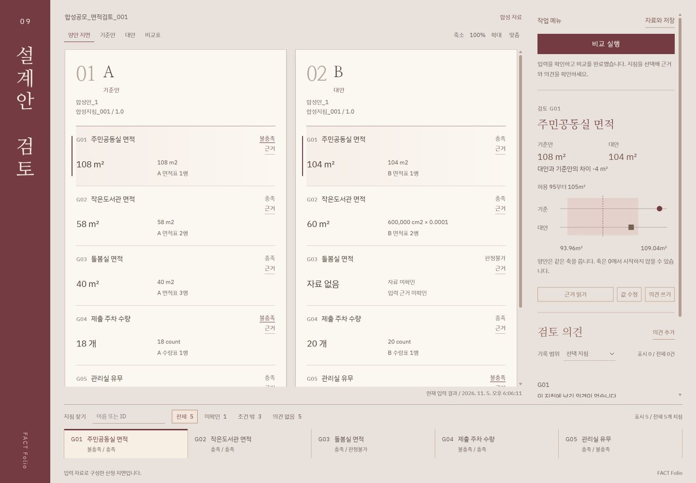

FACTFolio
같은 지침으로, 나란히 읽습니다.
Two entries, one brief, read side by side.
FACT Folio는 설계공모 출품안을 같은 공모지침에 비추어 나란히 읽는 심사 보조 도구입니다. 실별 요구면적과 허용범위, 최소 수량, 필수 공간을 두 안에 같은 규칙으로 적용하고, 항목마다 원래 값과 환산값, 산정 기준, 제출 근거를 함께 보여 줍니다. 점수를 매기거나 순위를 정하지 않습니다. 판단에 필요한 사실과 근거를 정리해 심사위원에게 건넵니다. 면적, 수량, 필수 공간을 검토하는 엔진은 합성 자료로 검증을 마쳤습니다.
FACT Folio is a review aid that reads design competition entries side by side against the same brief. It applies required room areas and tolerances, minimum counts and required spaces to both entries with one set of rules, and shows the original value, converted value, area definition and submitted source for every item. It does not score or rank entries. It hands the jury the facts and evidence their judgment needs. The review engine for area, count and required spaces has been verified on synthetic data.
- 유형
- Type
- 설계공모 심사 보조 도구Review aid for design competitions
- 입력
- Input
- 공모지침 규칙(면적, 수량, 필수 공간)과 두 안의 면적표, 공간 목록. JSON 파일이나 화면에서 입력하고, 사용자가 제공한 자료에는 출처를 함께 기록Brief rules for area, count and required spaces, with the area schedules and space lists of two entries, entered as JSON or on screen, with sources recorded for user-provided data
- 출력
- Output
- 항목별 판정과 근거, 두 안의 차이, 민감도 결과, 심사 의견 기록, 작업 파일(입력, 결과, 의견), CSV와 JSONItem checks with evidence, differences between entries, sensitivity results, reviewer notes, a work file with input, results and notes, CSV and JSON
- 모델
- Model
- 09.area-review.1.1.0
- 실행
- Runs on
- 사용자 컴퓨터의 로컬 서버, 외부 API 키 불필요A local server on the user's computer, no external API keys
- 개발
- Team
- KAIST 미래공간연구실, FACT 연구센터KAIST Future Space Lab, FACT Research Center
- 검증
- Status
- 합성 자료 검증 완료 (2026년 11월), 현재 코드 자동 검사 94개 통과 (11월 7일)Verified on synthetic data, November 2026; 94 automated tests passed on the current code, November 7
설계공모 심사에서 실별 면적과 필수 공간을 확인하는 일은 기본이지만, 출품안마다 자료의 형식이 달라 같은 기준으로 대조하는 데 손이 많이 갑니다. 숫자를 옮겨 적는 과정에서 빠진 값이 0으로 읽히거나, 산정 기준이 다른 면적이 그대로 비교될 수 있습니다.
Checking room areas and required spaces is a basic part of reviewing competition entries, but each entry presents its data differently, so comparing them on the same terms takes effort. When figures are copied by hand, a missing value can be read as zero, or areas measured on different definitions can be compared as if they were the same.
단위와 산정 기준이 제각각입니다
Units and definitions differ
㎡와 ㎠가 섞이거나 같은 실이라도 면적을 재는 기준이 다르면, 숫자를 나란히 놓아도 바로 비교할 수 없습니다.
When ㎡ and ㎠ are mixed, or the same room is measured on a different definition, numbers placed side by side are not yet comparable.
빠진 자료와 없는 공간은 다릅니다
Missing is not the same as absent
값을 내지 않은 것, 0을 낸 것, 공간이 없다고 밝힌 것은 서로 다른 뜻입니다. 이를 섞으면 판단이 흐려집니다.
Not submitting a value, submitting zero and stating that a space does not exist mean different things. Mixing them blurs the review.
경계 근처의 판정은 가정에 따라 바뀝니다
Borderline checks depend on assumptions
허용범위 경계에 가까운 항목은 허용편차나 면적을 재는 방식을 조금만 바꿔도 결과가 달라집니다. 이 민감도를 함께 봐야 합니다.
Items near a limit can change with a small shift in tolerance or in how areas are measured. That sensitivity belongs in the review.
BIM 제출이 늘어납니다
More entries will arrive as BIM
정부는 공공공사의 BIM 적용을 공사비 기준으로 단계적으로 넓혀, 2026년 500억 원 이상, 2028년 300억 원 이상, 2030년까지 모든 공공공사로 확대할 계획입니다. 심사 단계에서 제출 자료를 같은 기준으로 확인할 필요도 함께 커집니다.
Korea plans to extend BIM requirements for public construction by project cost, from 50 billion won and above in 2026 and 30 billion won and above in 2028 to all public projects by 2030. The need to check submissions on the same terms at the review stage grows with it.
BIM 적용 일정: 국토교통부 「스마트 건설 활성화 방안」(2022년 7월)과 관련 보도.
BIM schedule: Ministry of Land, Infrastructure and Transport, Smart Construction Activation Plan (July 2022), and related press reports.
- 01 / RULES
지침을 규칙으로
Brief to rules
공모지침의 요구면적과 허용편차, 최소 수량, 필수 공간을 항목별 규칙으로 옮기고, 규칙마다 지침의 출처와 버전을 붙입니다.
Required areas and tolerances, minimum counts and required spaces in the brief become item rules, each tagged with its source clause and version.
- IN
- Competition brief
- OUT
- Rules, JSON
- 02 / READ
제출값 읽기
Reading submissions
두 안의 면적표와 공간 목록에서 값과 단위, 면적 산정 기준, 제출 근거를 함께 읽습니다. 면적은 ㎡로 환산하되 원래 값도 그대로 보관합니다.
Values, units, area definitions and sources are read together from each entry's area schedule and space list. Areas are converted to ㎡, and the original values are kept.
- IN
- Area schedules, space lists
- OUT
- Values in square meters, with sources
- 03 / CHECK
같은 규칙으로 대조
One set of rules
두 안에 같은 규칙을 적용해 항목마다 충족, 불충족, 판정불가를 계산하고, 허용편차와 공통 측정 편향을 바꾼 9가지 조건에서 다시 계산합니다.
The same rules give met, not met or on hold for each item in both entries, then everything is recomputed under nine conditions of tolerance and common measurement bias.
- IN
- Rules, values
- OUT
- Checks, differences, 9 conditions
- 04 / RECORD
근거와 의견 기록
Evidence and notes
판정마다 원자료 값과 환산값, 허용범위, 산정 기준, 입력 해시를 남기고, 심사위원의 확인 요청과 의견을 그 결과에 연결해 CSV와 JSON으로 내보냅니다.
Each check keeps the raw and converted values, allowed range, area definition and input hash. Reviewer requests and notes are linked to that result and exported as CSV and JSON.
- IN
- Results, reviewer notes
- OUT
- CSV, JSON
- 충족Met
조건 안에 있습니다
Within the condition
제출값이 허용범위 안에 있거나 최소 수량 이상이고, 필수 공간이 있다고 확인된 경우입니다. 경계값은 범위 안으로 봅니다.
The value is within the allowed range or at least the minimum count, or the required space is confirmed. Values on a limit count as inside.
- 불충족Not met
조건을 벗어났습니다
Outside the condition
설정한 범위를 벗어났거나 필수 공간이 없다고 명시된 경우입니다. 출품안의 탈락을 뜻하지 않으며, 심사위원이 확인할 항목으로 표시합니다.
The value is outside the set range, or the entry states that a required space does not exist. It does not eliminate the entry. It marks an item for the jury to look at.
- 판정불가On hold
판정을 보류합니다
Held, not judged
자료가 없거나 면적 산정 기준이 지침과 달라 계산을 보류한 경우입니다. 빠진 자료를 0으로 채우지 않습니다.
There is no data, or the area definition differs from the brief, so the check is held. Missing data is never filled with zero.
null자료 미확인
Unconfirmed
값이 제출되지 않았거나 확인되지 않았습니다. 판정불가로 보류합니다.
No value was submitted or confirmed. The check is held.
0실제 0
A real zero
0이라는 값이 제출된 것으로 보고 그대로 계산합니다.
Zero was submitted, and it is computed as zero.
false확인된 부재
Confirmed absence
필수 공간이 없다고 확인된 경우입니다. 불충족으로 판정합니다.
The required space is confirmed absent. The check is not met.
판정 가능 비율(예: 5개 항목 중 4개, 80%)은 자료와 산정 기준을 갖춰 판정할 수 있었던 범위를 뜻하며, 지침 적합률이 아닙니다.
The share of judged items (for example 4 of 5, 80%) is the part that had the data and definitions needed for a check. It is not a compliance rate.
- 01
점수와 순위, 당락을 만들지 않습니다
No scores, rankings or verdicts
출품안을 합산 점수로 줄 세우지 않습니다. 항목별 사실과 근거를 나란히 보여 주고, 판단은 심사위원에게 남깁니다. 심사 의견은 계산된 판정을 덮어쓰지 않고 따로 기록됩니다.
Entries are never ranked by a combined score. Item facts and evidence are shown side by side, and the decision stays with the jury. Reviewer notes are recorded separately and never overwrite a computed check.
- 02
모르는 것은 모른다고 표시합니다
Unknown stays unknown
자료 미확인과 실제 0, 확인된 부재를 구분합니다. 면적 산정 기준이 지침과 다르면 숫자가 있어도 판정을 보류합니다.
Unconfirmed data, a real zero and a confirmed absence are kept apart. If an area definition differs from the brief, the check is held even when a number is present.
- 03
같은 입력에는 같은 결과가 나옵니다
Same input, same result
계산에 난수를 쓰지 않습니다. 입력과 지침, 모델에 SHA-256 해시를 붙여, 결과가 어떤 조건에서 나왔는지 나중에 다시 확인할 수 있습니다.
No randomness is used in the calculation. Inputs, brief and model carry SHA-256 hashes, so the conditions behind any result can be checked again later.
- 04
모든 판정에 근거가 따라갑니다
Every check carries its evidence
판정마다 원자료 값, 환산값, 허용범위, 산정 기준, 제출 근거가 함께 남습니다. 제출 근거는 입력한 사람이 적은 참조이므로, 원문과 맞는지는 따로 확인합니다.
Each check keeps the raw value, converted value, allowed range, area definition and submitted source. Sources are references entered by people, so their match with the original documents is checked separately.
합성 예제의 계산 결과입니다. 민감도는 가정한 조건에서 판정이 어떻게 달라지는지 보여 줄 뿐이며, 확률이나 신뢰구간, 실제 측정 오차의 분포가 아닙니다. 수량과 공간 유무는 면적 편향의 영향을 받지 않습니다.
Results for the synthetic example. Sensitivity shows how checks change under assumed conditions. It is not a probability, a confidence interval or a distribution of real measurement error. Counts and required spaces are not affected by the area bias.

- F.01
두 산정 지면
Two calculation sheets
기준안과 대안을 같은 형식의 지면에 나란히 펼쳐, 같은 지침 항목을 같은 순서로 읽습니다.
The baseline and the alternative are laid out on sheets of the same format, so the same brief items read in the same order.
- F.02
지침 책갈피
Brief bookmarks
책갈피에서 지침 항목을 고르면 두 지면의 제출 원값과 환산값, 요구범위, 산정 근거가 함께 연결됩니다.
Choosing an item in the bookmarks links the submitted and converted values, the required range and the evidence on both sheets.
- F.03
검토 의견 기록
Reviewer notes
확인 요청, 자료 보완, 검토 의견을 실행 당시의 입력과 모델 해시에 연결해 남깁니다. 의견은 계산된 판정을 바꾸지 않습니다. 저장한 작업을 불러오거나 파일을 들이는 동안에는 새 의견 등록을 막고, 기존 의견을 교체하기 전에는 확인을 받습니다.
Requests for confirmation, data supplements and review comments are tied to the input and model hashes of the run. Notes never change a computed check. New notes are locked while saved work is restored or a file is imported, and replacing existing notes asks for confirmation first.
- F.04
입력과 검증
Input and validation
JSON 파일이나 화면에서 지침과 두 안의 값을 입력하고, 사용자가 제공한 자료에는 프로젝트 ID, 원문 문서 ID, 개정번호, 원문 위치를 붙여 출처를 남깁니다. 음수 면적, 잘못된 단위, 중복 식별자, JSON 문법 오류는 계산에 넣지 않고 문제 위치와 수정 방법을 알려 줍니다.
Brief items and the values of both entries are entered as JSON or on screen, and user-provided data carries a project ID, source document ID, revision and source location. Negative areas, invalid units, duplicate identifiers and JSON syntax errors are kept out of the calculation, with the location of the problem and how to fix it.
- F.05
저장과 인계
Save and hand off
입력과 계산 결과, 검토 의견을 하나의 작업 파일로 묶어 다른 담당자에게 넘기고, 들일 때는 파일 해시와 재계산 결과, 의견이 참조한 입력을 다시 확인합니다. 입력 JSON, 결과 JSON, 출처를 담은 비교표 CSV로 내보내며, 같은 브라우저에서는 시나리오를 저장해 다시 불러옵니다. 파일 해시는 내용이 같은지 확인할 뿐 작성자를 인증하지 않습니다.
Input, results and reviewer notes are bundled into one work file for the next reviewer, and on import the file hash, a fresh recalculation and the inputs behind each note are checked again. Exports include input JSON, result JSON and a comparison CSV with sources, and scenarios can be saved and reloaded in the same browser. The file hash confirms matching content. It does not authenticate the author.
- F.06
인쇄 참고 화면
Print view
편집 영역을 감추고 결과와 근거를 중심으로 정리한 인쇄용 화면을 제공합니다.
A print view hides the editing panels and lays out results with their evidence.
- ㎡, ㎠, ㎟로 적은 같은 면적이 같은 결과를 냅니다.The same area written in ㎡, ㎠ or ㎟ gives the same result.
- 목표 100㎡, 허용편차 5%에서 95와 105㎡는 충족, 94.99999와 105.00001㎡는 불충족입니다.With a 100 ㎡ target and 5% tolerance, 95 and 105 ㎡ are met, while 94.99999 and 105.00001 ㎡ are not.
- 음수, 숫자가 아닌 값, 지원하지 않는 단위, 중복 식별자는 계산하지 않고 거부합니다.Negative or non-numeric values, unsupported units and duplicate identifiers are rejected.
- 두 안에 같은 자료를 넣으면 판정과 수치가 같고 차이는 0입니다.Identical data in both entries gives identical checks and a zero difference.
- 같은 입력을 따로 실행해도 결과 파일이 바이트 단위로 같습니다 (11월 2일 점검).Separate runs on the same input produce byte-identical result files (checked November 2).
- 작업 파일을 디스크에 저장했다가 다시 읽어도 입력 해시와 검토 의견이 그대로 남습니다 (11월 7일 자동 검사).A work file written to disk and read back keeps the same input hash and reviewer notes (automated test, November 7).
- 실제 공모지침과 출품안 자료로 한 검증Testing on a real brief and real entries
- 심사위원이 만든 정답표와의 대조Comparison with an answer sheet made by reviewers
- 도면이나 BIM 형상에서 면적을 직접 계산하는 기능 (지금은 입력된 면적을 사용)Computing areas from drawings or BIM geometry, which currently relies on entered areas
- IFC, 법규 검토 엔진, 행태 시뮬레이션 엔진과의 연동Links to IFC, code-check engines and behavior simulation engines
- 프로젝트 자료 입력과 작업 파일 인계를 실제 브라우저에서 확인Checks of project data entry and work file handoff in a real browser
- 브라우저에서의 실제 파일 선택과 다운로드, 실물 인쇄, 여러 사용자의 동시 편집과 계정 권한File picking and downloads in a real browser, printing on paper, and multi-user editing with accounts and permissions
실제 공모 자료와 심사 현장에서의 검증은 다음 단계에서 진행합니다. 현재 Folio는 법규 적합성이나 인증을 판정하지 않습니다. 사용자 제공 자료에 붙는 출처 기록은 자료가 어디서 왔는지를 남길 뿐, 원문의 진위나 수치의 정확성을 확인했다는 뜻은 아닙니다.
Testing with real competition data and in a real jury comes next. Folio does not currently judge legal compliance or certification. Source records on user-provided data show where the data came from. They do not confirm that the source is authentic or that the figures are correct.
최종 목표는 공공주택과 지자체 공공건축 설계공모의 여러 출품안을 같은 한국인 페르소나 인구와 같은 규칙 엔진으로 돌려, 공모지침 적합성과 외부 법규 검토 결과, 생활 동선, 보행약자 피난, 로봇 대응 성능을 한 장의 비교표와 입주민의 하루 시각화로 심사위원에게 전하는 것입니다.
The goal is to run every entry in public housing and public building competitions through the same synthetic Korean population and the same rule engine, and to give the jury one comparison sheet and a day-in-the-life view covering brief compliance, external code review results, daily circulation, evacuation for people with reduced mobility and robot readiness.
- 01합성 자료 검증 완료Verified, synthetic data
공모지침 적합성
Brief compliance
실별 요구면적과 허용범위, 최소 수량, 필수 공간
Room areas and tolerances, minimum counts, required spaces
- 02외부 엔진 연동 예정External engine, planned
법규 검토 결과 연결
Code review results
무장애(BF) 기준을 포함한 외부 법규 검토 결과를 출처, 버전과 함께 나란히 표시합니다. Folio가 법규 적합을 판정하지는 않습니다.
Results of an external code review, including barrier-free criteria, shown side by side with their source and version. Folio itself does not judge compliance.
- 03행태 시뮬레이션 연동 예정Behavior engine, planned
입주민 일과 동선
Daily circulation
평균 보행거리, 출근 시간 승강기 대기
Average walking distance, elevator waits at the morning peak
- 04연동 예정Planned
보행약자 피난 안전성
Evacuation for people with reduced mobility
피난 소요 시간(RSET), 막다른 복도와 계단 합류 지연
Required safe egress time (RSET), dead-end corridors and merging delays at stairs
- 05연동 예정Planned
로봇 친화 준비도
Robot readiness
단차와 로봇 우회 경로, 물류 거점
Level changes, robot detours and logistics hubs
- 06개발 예정Planned
입주민의 하루
A day in the life
같은 인구가 두 안에서 보내는 하루를 나란히 시각화
The same population living a day in each entry, shown side by side
확장 단계에서는 모든 출품안에 같은 난수 시드로 만든 같은 한국인 코호트(고령자, 유모차 동반 보호자, 휠체어 이용자, 직장인, 배송 로봇)를 넣어 비교할 계획입니다. 현재 Folio는 난수를 쓰지 않고 두 안만 비교하며, 같은 시드로 공정성을 검증한 결과는 아직 없습니다. 같은 시드만으로 공정성이 보장되지는 않으므로 입력 누락과 평가 방법도 함께 공개합니다.
In the expansion stage, every entry is planned to receive the same Korean cohorts generated from the same random seed, including older adults, parents with strollers, wheelchair users, office workers and delivery robots. Folio today uses no randomness and compares two entries, and fairness under a shared seed has not been tested. A shared seed alone does not make a review fair, so missing inputs and the evaluation method will be disclosed as well.
진행 순서Steps- STEP 01
실제 자료 확보
Real data
사용 허가를 받은 공모지침 1건과 두 출품안의 익명화한 면적표를 확보하고, 두 명의 검토자가 정한 판정과 대조합니다.
Obtain one brief and the anonymized area schedules of two entries with permission, and compare the results with checks settled by two reviewers.
- STEP 02
입력 도구
Input tool
화면에서 지침과 두 안의 값을 직접 입력하는 기능은 2026년 11월 7일에 더했습니다. 다음은 면적표 CSV 가져오기와, 근거를 원문의 행이나 모델 객체까지 이어 주는 연결입니다.
On-screen entry of brief items and the values of both entries was added on November 7, 2026. Next come importing area schedules from CSV and tracing evidence to rows in the source or objects in the model.
- STEP 03
엔진 연결
Engine links
법규 검토 엔진과 행태 시뮬레이션 엔진이 준비되면 어댑터로 연결하고, 통합 비교표는 2027년 하반기 착수를 목표로 합니다. 이때도 자동 당락이나 합산 점수는 만들지 않습니다.
Connect code-check and behavior simulation engines through adapters once they are ready, aiming to start the integrated comparison sheet in the second half of 2027, still without automatic verdicts or combined scores.
실제 공모 자료로 함께 검증할 발주 기관, 공모 운영 기관, 연구 협력 기관을 찾고 있습니다. 검토하려는 공모의 유형과 일정을 알려 주시면 합성 예제로 시연을 준비하겠습니다.
We are looking for commissioning bodies, competition organizers and research partners to test it with real competition data. Tell us the type and schedule of the competition you have in mind, and we will prepare a demo on the synthetic example.
fact.kaist@gmail.comfact.kaist@gmail.com
센터장 차승현 교수, KAIST 문화기술대학원Director, Prof. Seung Hyun Cha, KAIST Graduate School of Culture Technology
- Note이 페이지의 예제는 합성 자료이며 실제 공모, 기관, 출품안과 관계없습니다.The examples on this page are synthetic and unrelated to any real competition, organization or entry.
- Note판정 결과는 심사위원의 판단을 돕기 위한 참고 자료이며, 법규 적합성 검토나 인증을 대신하지 않습니다.Checks are reference material for the jury. They do not replace legal compliance review or certification.